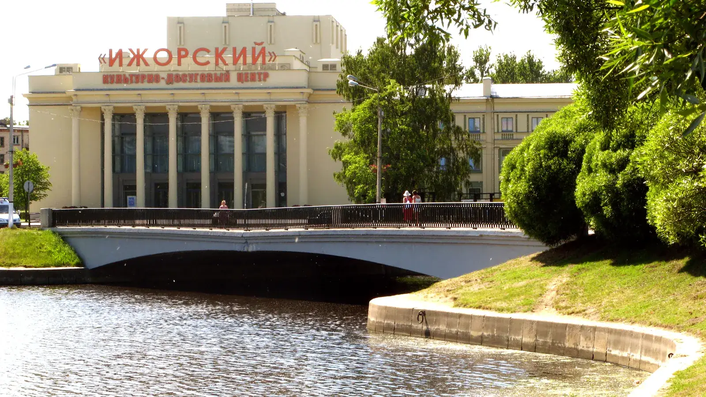

Дом молодёжи «Колпинец»
Колпинец
г. Колпино, Заводской пр., д. 10
Смотреть площадку
Молодёжные площадки района
Клубы Дома молодёжи «Колпинец» и МЦ «Ровесник» в Колпине, Металлострое и Понтонном.
Смотреть площадкиСведения сверены по открытым источникам. Набор, расписание и условия уточняй у организатора.
Каталог района
Ищи по названию, адресу или направлению.
Показано 15 площадок
г. Колпино, Заводской пр., д. 10
Смотреть площадкуг. Колпино, ул. Павловская, д. 82
Смотреть клубг. Колпино, ул. Ижорского Батальона, д. 15
Смотреть клубг. Колпино, пр. Ленина, д. 49
Смотреть клубг. Колпино, ул. Володарского, д. 9
Смотреть клубг. Колпино, бульвар Трудящихся, д. 29/5
Смотреть клубпос. Понтонный, ул. Южная, д. 13
Смотреть клубпос. Металлострой, ул. Полевая, д. 2/30
Смотреть клубпос. Металлострой, ул. Школьная, д. 12
Смотреть клубг. Колпино, ул. Павловская, д. 82
Смотреть площадкуг. Колпино, ул. Танкистов, д. 28А
Смотреть клубг. Колпино, ул. Веры Слуцкой, д. 89
Смотреть клубПлощадки на базе школ Колпинского района
Смотреть клубг. Колпино, ул. Загородная, д. 62
Смотреть клубпос. Понтонный, ул. Южная, д. 3
Смотреть клубПодходящих площадок не найдено. Попробуй другой запрос.
Связаться с учреждением
Контакты учреждения
г. Колпино, Заводской пр., д. 10
Контакты учреждения
г. Колпино, ул. Танкистов, д. 28А
Перед посещением
Спроси, для кого открыта группа.
Проверь дни, время и наличие мест.
Узнай, как присоединиться.
Состав и направления: документ Дома молодёжи «Колпинец» и документ «Ровесника» в городской базе от 01.06.2026. Действующий состав «Ровесника» дополнительно сверен с сайтом учреждения. Часть адресов в старых районных списках расходится с документами: смотри примечания на страницах клубов.
Фото КДЦ «Ижорский» и моста: Андрей Крижановский, Wikimedia Commons, общественное достояние. Изображение кадрировано.